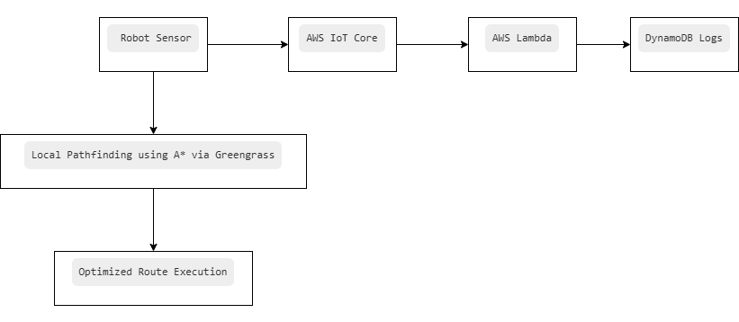

Amazon Robotics – Smart Warehouse Navigation with Graph Algorithms and AWS IoT
1. Business Case
Amazon’s fulfillment centers serve as the heart of its global e-commerce operations, handling millions of products that are ordered and shipped daily. To ensure rapid delivery and accurate inventory management, Amazon employs hundreds of thousands of autonomous mobile robots (AMRs), originally developed by Kiva Systems, now known as Amazon Robotics [1].
These robots automate repetitive warehouse tasks such as locating and transporting inventory shelves to human operators for order picking. This drastically reduces the amount of walking employees need to do, boosting operational speed and lowering labor fatigue. Instead of people going to items, items come to people — a fundamental shift in warehouse logistics [1].
To coordinate robot movements efficiently and avoid collisions in a fast-paced environment, Amazon designs the warehouse floor as a virtual graph. Using graph algorithms like A*, robots identify the most efficient route to their target destination. These decisions are not only calculated on-device but also augmented via real-time updates from AWS cloud services, which handle large-scale coordination, monitoring, and load balancing [2].
By combining robotics with cloud computing and graph theory, Amazon creates a warehouse ecosystem that is not only automated but also intelligent. This results in improved order accuracy, faster fulfillment, and significant cost reductions.
2. Algorithms & Data Structures
Amazon's warehouse navigation system is built around graph theory. The warehouse is modeled as a graph where every important location (like shelves, stations, or junctions) is a node, and the walkable paths between them are edges. This allows robots to calculate the best path between any two points on the floor.
The A* algorithm plays a central role here. It is a pathfinding algorithm that combines the best parts of Dijkstra’s algorithm (shortest path) and greedy search (goal-focused). By estimating how close a path is to the destination, it helps robots choose faster and more efficient routes in real time, especially when obstacles or other robots require route changes [3].
Key data structures used include:
Priority Queue: Selects the next most promising node quickly based on cost and distance.
Adjacency List: Efficiently stores which nodes are connected to each other, saving memory and speeding up lookup time.
Dynamic Edge Weights: Allows path costs to change in real time based on conditions like blocked paths, traffic, or battery levels. This information comes from AWS IoT telemetry updates.
For instance, if multiple robots are approaching an intersection, the robot closest to it gets priority while others reroute or wait. These decisions happen in milliseconds, powered by local edge computing (Greengrass) and supported by the cloud.
3. Architecture & Models
The system architecture integrates both edge and cloud computing. Robots operate independently for local decisions but remain connected to the cloud for global synchronization. Here's a step-by-step breakdown of how the system functions [2]:

1. Robot Sensor: Each robot continuously collects data about its position, battery level, and surrounding environment.
2. AWS IoT Core: Securely sends this telemetry data to the cloud, where it's processed and acted upon in real time.
3. AWS Lambda: Handles coordination logic — such as reassigning paths, balancing traffic, or logging data.
4. DynamoDB: Records telemetry and historical movement data for optimization, analytics, and debugging.
5. AWS Greengrass: Runs the A* algorithm locally on robots so they don’t have to wait for cloud input, reducing latency in critical navigation decisions.
Interactive A* Pathfinding Simulation
Click to set Start (green), Goal (red), then click to draw walls (black). Press "Find Path".
📘 How It Works: A* Pathfinding Simulation in Warehouse
🔍 What This Shows: This simulation represents a warehouse robot, like Amazon’s AMRs, finding the shortest path on a grid. Each square on the grid stands for a specific point on the warehouse floor.
🟩 First click → Sets the robot's starting position.
🟥 Second click → Marks the destination (e.g., a shelf or exit).
⬛ Additional clicks → Add walls representing obstacles like shelves or blocked paths.
▶️ Click “Find Path” → Triggers the A* algorithm to calculate the optimal route.
🚚 What Happens Internally:
The grid is treated as the warehouse floor, broken into cells (nodes).
The A* algorithm begins from the robot’s position:
Calculates g: cost from start node
Estimates h: cost to goal using Manhattan Distance
Total cost f = g + h
The algorithm always selects the next move with the lowest f (using Priority Queue logic).
It avoids obstacles and already-visited nodes.
The search stops when the goal is reached.
The final path is shown in blue (optimized route).
📦 Warehouse Equivalents:
Grid Cell → Shelf location or aisle point
Wall (⬛) → Obstructed path or another robot
Path (🔵) → Optimized route taken by the robot
A* + Priority Queue → Local decision-making (AWS Greengrass)
Real-time Updates → Managed by AWS IoT and Lambda functions
🧠 Data Structures Used:
Graph (Grid)
Heuristic Function (Manhattan Distance)
Visited Set (tracks already-checked nodes)
Priority Queue (selects most optimal next node)
Path Reconstruction (from parent node mappings)
🏁 End Goal: Build a robot routing system that is fast, safe, and intelligent — ideal for a dynamic warehouse environment.
4. Efficiency Analysis
Implementing graph-based navigation with AWS infrastructure has brought substantial improvements across various warehouse KPIs. These improvements aren't just about speed but also about safety, energy efficiency, and predictability.
Metric
Before Automation
With AWS + Graph Algo
Reason for Improvement
Picking Efficiency
100 units/hour
300+ units/hour
AMRs deliver shelves directly to humans, removing the need for walking. This reduces fatigue and enables workers to focus only on picking, which increases speed and accuracy.
Robot Idle Time
30%
<10%
Real-time routing decisions help distribute workloads better and avoid congestion zones. Idle robots are immediately reassigned or rerouted using AWS Lambda and Greengrass decisions.
Fulfillment Delay
Up to 1 hour
<10 minutes
Fast edge-level decisions using A* and Greengrass allow continuous motion even during peak hours. Cloud alerts from IoT Core help anticipate and resolve bottlenecks before they affect delivery.
System Downtime
High (manual)
<1%
Hybrid architecture ensures that even if cloud connectivity drops, robots continue operating locally. Fault tolerance is enhanced through AWS backup logic and self-healing services.
5. Story, References & Connection
This case study embodies how cloud computing, robotics, and classical computer science converge to solve modern logistical problems. The use of data structures like graphs and priority queues, combined with real-time edge computing using AWS Greengrass, results in smarter robots capable of autonomous and collective decision-making. These innovations are not theoretical — they are actively shaping Amazon’s day-to-day operations across the globe.
The navigation algorithms discussed here are directly supported by AWS services like IoT Core, Greengrass, Lambda, and DynamoDB, allowing massive scalability and robust coordination. Future extensions include predictive rerouting using ML models on Amazon SageMaker, proving that the system is continuously evolving. This story serves as a real-world example for students and engineers interested in applied graph theory, AI, and cloud architecture.
The Amazon Robotics case study showcases a transformative model for warehouse automation. By combining classical graph algorithms like A* with scalable cloud infrastructure (AWS), Amazon has created a navigation system that is both autonomous and intelligent. This integration dramatically boosts efficiency, safety, and scalability of operations.
This serves as a powerful demonstration of how algorithmic logic and cloud-native services can solve complex, real-world problems. For anyone interested in automation, distributed systems, or AI, Amazon’s robotic fulfillment is a benchmark in modern industrial engineering and digital transformation.